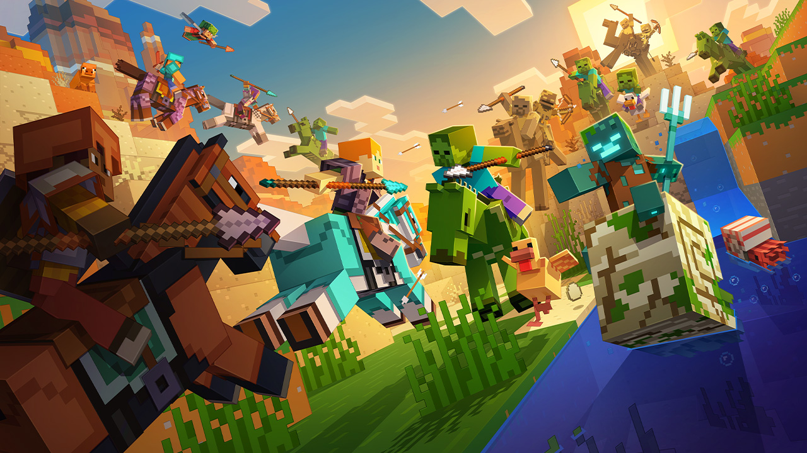

F34 DI Mode
Add cool features to your Minecraft world with this DI mod! Experience custom GUIs, community config sharing, and an optimized game environment.
Download Mod Download instantly without login or suggestions.Installation Guide
- 01 Install Forge 1.12.2 first.
- 02 Put the downloaded .jar file in the mods folder.
- 03 Launch the game and check the F34 menu!
System Requirements
Version
3.0 (Latest)
Compatibility
Minecraft 1.12.2
Required Mod
Forge